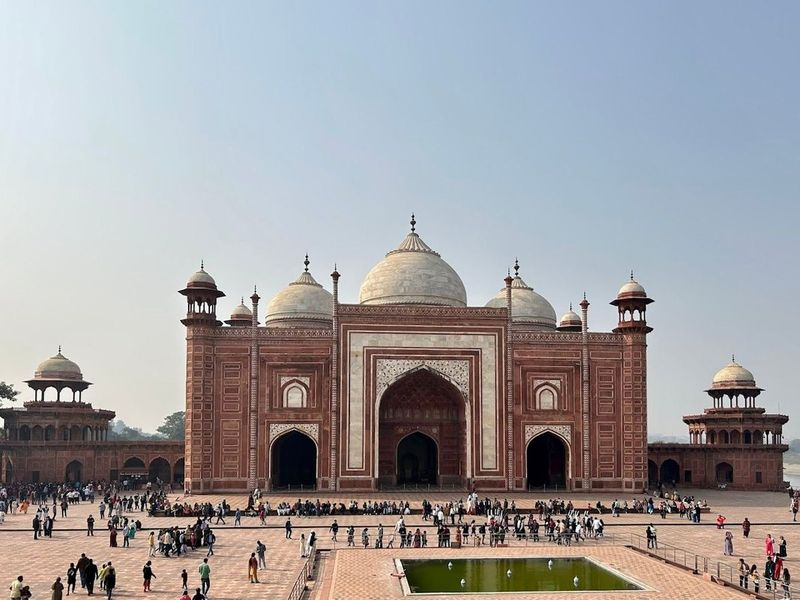
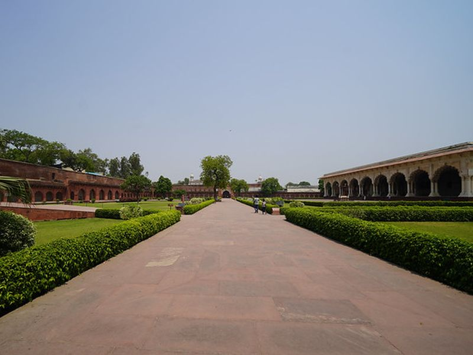
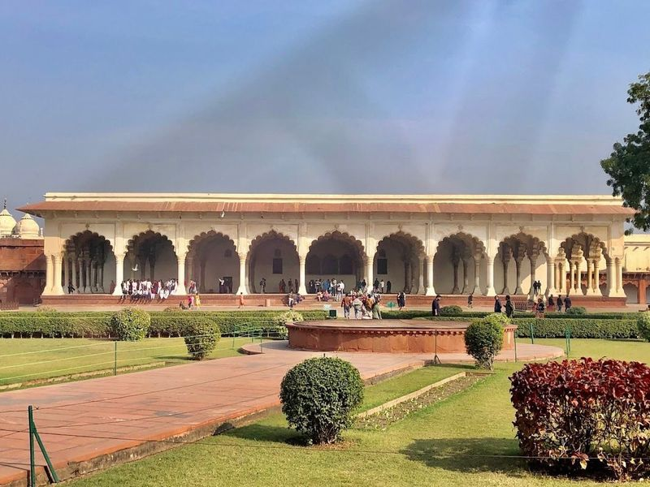
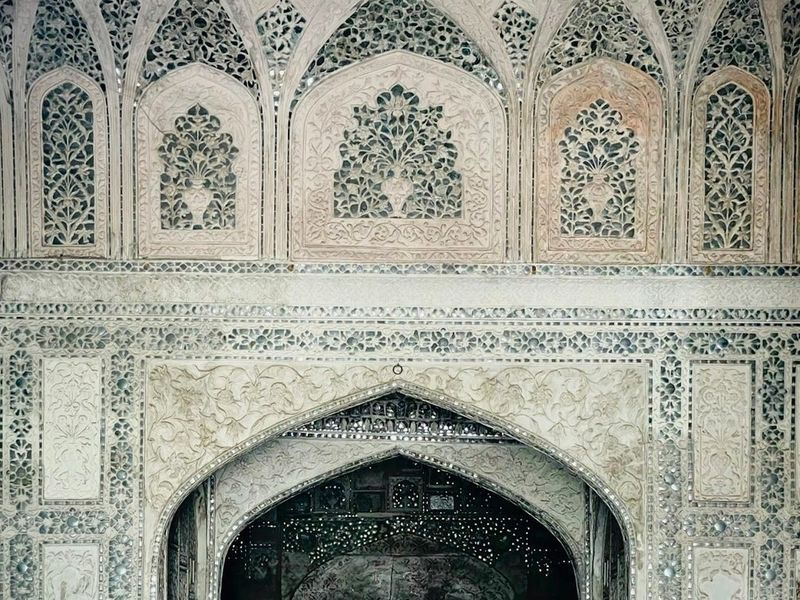
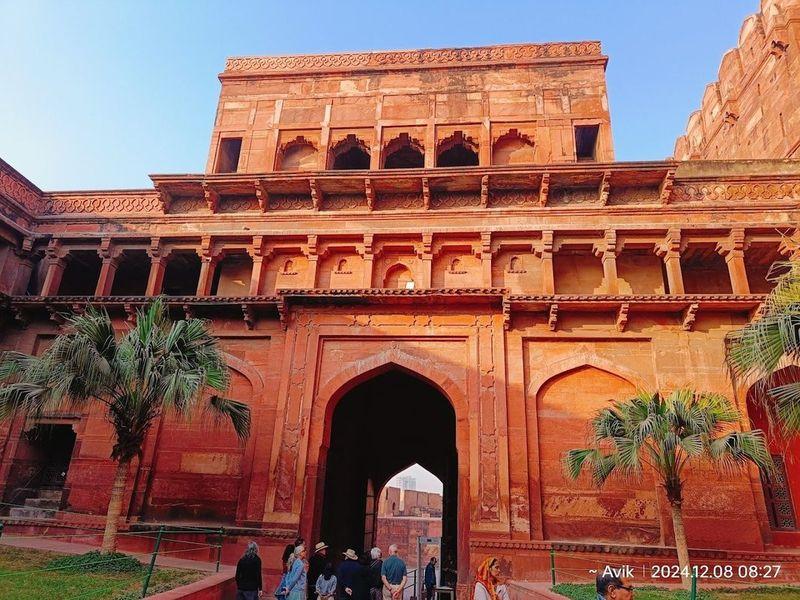
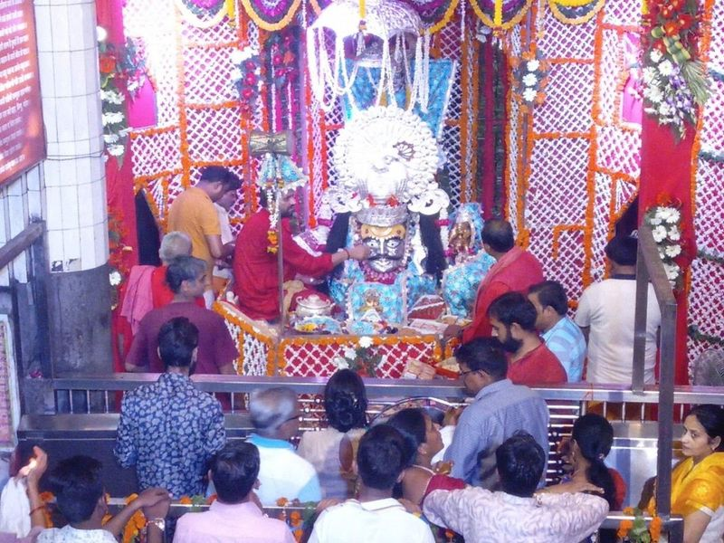
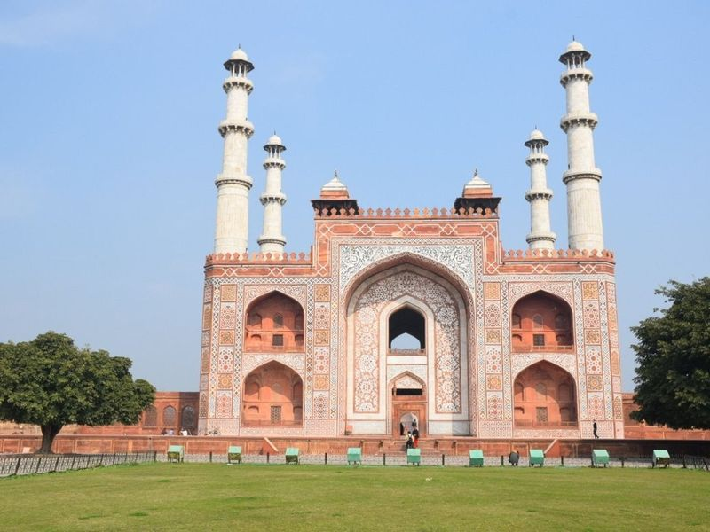
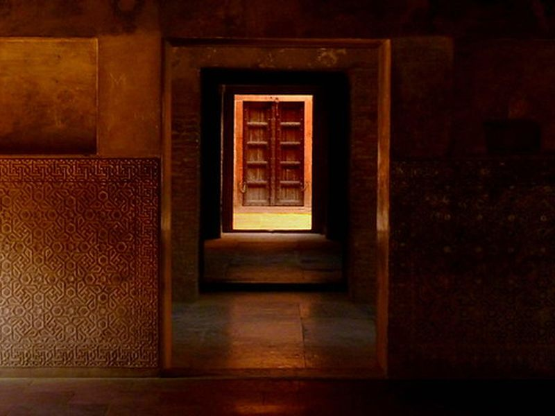
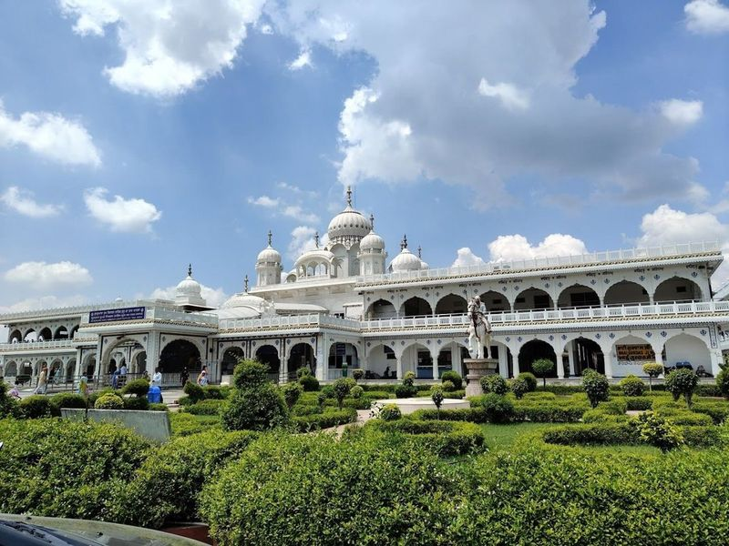
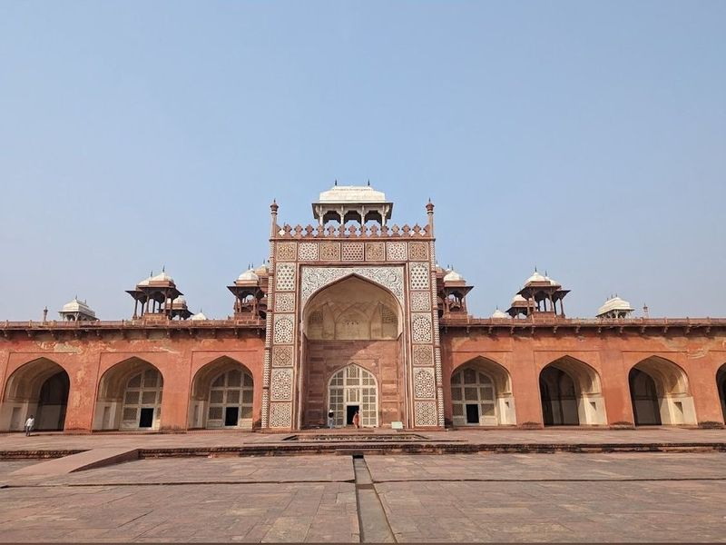

Explore Agra
A Brief History
Agra flourished as the Mughal capital under Akbar, Jahangir, and Shah Jahan in the sixteenth and seventeenth centuries. The Taj Mahal, Agra Fort, and riverside gardens embody imperial tomb architecture and riverfront palace design on the Yamuna, linking Indo-Islamic artistry to trans-regional trade. Marble inlay workshops and riverside gardens still frame views of the Taj from the Yamuna's west bank.
Attractions Map
Top Sights & Activities

Taj Mahal
Taj Mahal, a 17th-century Mughal-style marble mausoleum located in Agra, India, is a symbol of love and architectural mastery. Built by Emperor Shah Jahan in memory of his beloved wife Mumtaz Mahal, it is described as an "elegy created in marble" and an "expression of true love." The monument's symmetrical gardens, minarets, and mosque add to its grandeur.

Agra Fort
Agra Fort is listed among principal sites for Agra within India. Municipal and regional heritage listings document its place in the historic centre and travellers routes through Agra. Agra Fort is listed among principal sites for Agra within India. Municipal and regional heritage listings document its place in the historic centre and visitor routes through Agra.

Diwan-E-Aam
Diwan-I-Am is a significant structure located within the Red Fort complex in Agra. It is an audience hall built with red sandstone and features intricate arched colonnades. The hall was used for public audiences, celebrations, and public prayers. The architecture includes cloisters on three sides of a rectangular courtyard, with white lime polished arches and a triple arched royal canopy adorned with lavish pietra dura ornamentation.

The Shish Mahal (The Glass Palace)
The Shish Mahal, also known as the Glass Palace, is a restored 17th-century palace located within Agra Fort. It features mirror-glass mosaics and water features set amidst landscaped gardens. This magnificent structure was an addition by Shah Jahan and served as the imperial bath of the Emperor. The palace's thick walls were designed to maintain a cool and pleasant interior ambiance.

Amar Singh Gate
Amar Singh Gate is a monumental pink-sandstone entrance to the 17th-century Agra Fort, also known as Akbar Darwaza. It's named after the Rajput king Amar Singh and features intricate tiling, beautiful carvings, and inlay work. Located near Agra Fort railway station and just 3km away from Taj Mahal, it offers a royal backdrop for pre-marriage shoots with its historical significance.

Shri Mankameshwar Temple, Agra
Shri Mankameshwar Temple is an ancient Hindu temple dedicated to Lord Shiva, situated near the Jama Masjid in Rawatpara, Agra. It is believed that the Shiva Linga inside the temple was created by Lord Shiva himself. The temple holds great mythological significance, with legends stating that it was built by Lord Ram and prayed at by Goddess Sita. Visitors are drawn to its peaceful atmosphere and beautiful carvings.

Itmad-ud-Daula
Itmad-ud-Daulah's Tomb, also known as the Baby Taj, is a Mughal-style mausoleum located on the east bank of the Yamuna River near central Agra. Commissioned by Nur Jahan for her father, it is considered a precursor to the Taj Mahal due to its architectural style. The tomb is made entirely of marble and features intricate marble inlay work, delicate carvings, and beautiful lattice screens.

I LOVE AGRA photo point
I LOVE AGRA photo point is listed among principal sites for Agra within India. Municipal and regional heritage listings document its place in the historic centre and travellers routes through Agra. I LOVE AGRA photo point is listed among principal sites for Agra within India.

Gurudwara Guru Ka Taal Agra
Gurudwara Guru Ka Taal is a significant religious site in Agra, commemorating the spot where Guru Teg Bahadur Ji surrendered to Aurangzeb. The gurdwara, constructed in the 1970s, holds historical artifacts and features ornate architecture and gardens. It is believed that four out of the ten Sikh gurus have visited this place, making it a popular pilgrimage site.

Sikandra Fort
Sikandra Fort, located in Agra, is a example of the fusion of Hindu and Islamic architecture. The fort's red sandstone structure is well-preserved, featuring high walls adorned with intricate designs. Adjacent to Emperor Akbar's tomb, the fort showcases phenomenal designs and a rich history. Visitors can explore its magnificent darwazas, tombs, and impressive red facade. The well-maintained garden adds to the grandeur of this historical site.